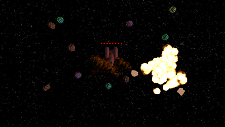
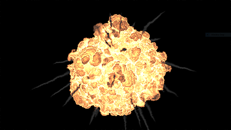

Never Tell Me The Odds
SideFX Game Jam 2022
Game Description:
Never Tell Me The Odds is a small created for the SideFX 2022 game jam. The theme of the jam was "Against all odds". My submission was a solo project, where the player needs to quickly deploy and explode mines to keep their shapeship safe as it journey's through an asteroid field.
Controls:
Click to deploy a mine. It will take a couple seconds to arm itself. Once armed you can click again to detonate it and destroy surrounding asteroids. If an asteroid hits a mine it will damage it, click it again and it will quickly repair itself. If 10 asteroids strike the spaceship, it will explode. If you survive for 60 seconds, you win!
Game Credits
Audio was supplied by the website We Love Indies. All other aspects were created by me in Houdini, Unity, or Blender.

